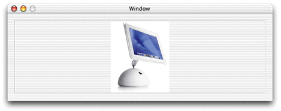

The image view widget you placed in the interface file did not specify a particular image. Rather, it specified an area in the window where an image can be displayed. You now need to add some code to retrieve the image and load it in the image view widget.
In Project Builder, open the Java class for the interface file you just edited. Before modifications, it should look something like this:
package mycompany.client;
import com.webobjects.foundation.*;
import com.webobjects.eocontrol.*;
import com.webobjects.eoapplication.*;
public class MyInterfaceController extends EOInterfaceController {
public MyInterfaceController() {
super();
}
public MyInterfaceController(EOEditingContext substitutionEditingContext) {
super(substitutionEditingContext);
}
}
To load and place the image, you'll use the EOInterface Swing package (com.webobjects.eointerface.swing.*). So, add the import statement:
import com.webobjects.eointerface.swing.*;
Next, you need to add an instance variable to get access to the outlet you defined in the interface file. The variable's type is EOImageView, defined in com.webobjects.eointerface.swing.*. You named the outlet "imageview" so add an instance variable of the same name:
public EOImageView imageview;
To load an image into the EOImageView object, you need to
make sure that the interface controller has finished loading. The
method controllerDidLoadArchive is invoked
when the controller is finished loading. You can override it to
perform certain initializations, such as loading an image into an
image view. Add the method as shown in Listing 18-1.
Listing 18-1 Overriding controllerDidLoadArchive
protected void controllerDidLoadArchive(NSDictionary namedObjects) {
ImageIcon iIcon =
(ImageIcon)EOUserInterfaceParameters.localizedIcon("iMac"); //1
Image newImage = iIcon.getImage(); //2
imageview.setImage(newImage); //3
}
Code line 1 attempts to retrieve an image that is associated with the Web Server target. Specify the image name without including the suffix.
Note: As
of WebObjects 5.1, EOUserInterfaceParameters.localizedIcon retrieves images
with extensions gif, jpeg,
and png only. |
Code line 1 casts the retrieved object into an object of type
ImageIcon. localizedIcon returns an object
of type Icon, so casting the retrieved object into an ImageIcon
allows you to retrieve the image data in the form of an Image object
that the setImage method on EOImageView
accepts. Code line 2 retrieves the image's data from the ImageIcon
object and code line 3 sets the image in the image view object to
the image retrieved in codeline 1.
If successful, your interface file should load and display the specified image as shown in Figure 18-6.
Figure 18-6 Image in image view
